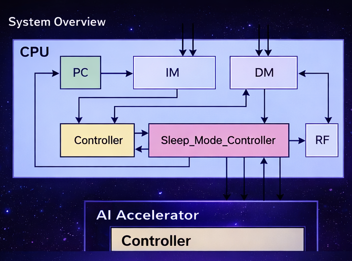
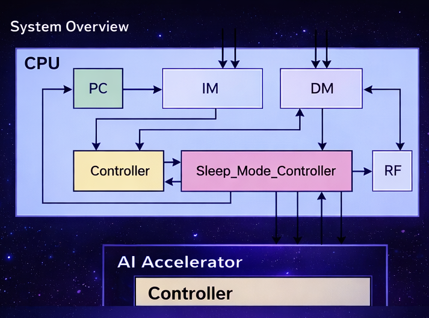
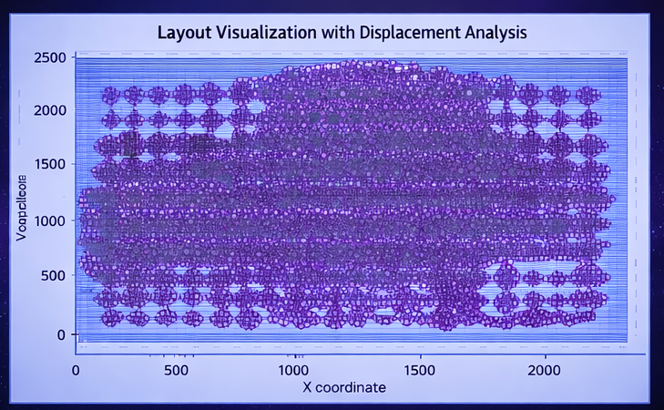
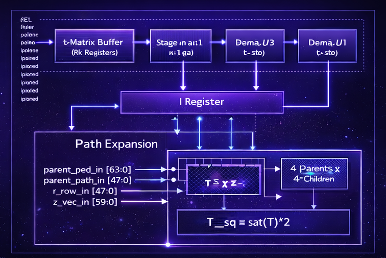
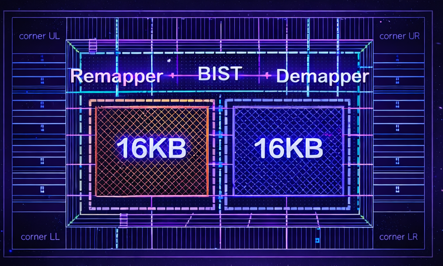

TSMC 16nm Post-Layout RISC + MNIST CNN
End-to-end MNIST inference (89% accuracy). Post-layout in TSMC 16nm ADFP: ~100 MHz, 2.46 mW dynamic power, area 17655.4 um2.
ASIC / Digital IC Design · ML Accelerator Hardware
I am a M.S. student at NTUST focusing on digital IC design and ML accelerator systems. I work across RTL-to-GDS flow (DC/ICC2, Innovus, Calibre) and build reproducible evaluation scripts in Python/C++. Current research: multi-user scheduling for LLM inference on HBM-based Processing-in-Memory (PIM).
End-to-end MNIST inference (89% accuracy). Post-layout in TSMC 16nm ADFP: ~100 MHz, 2.46 mW dynamic power, area 17655.4 um2.
C++ legalization to minimize displacement under constraints. 18% lower avg displacement; evaluated on ~50k cells with ~10 min runtime.
Verilog implementation; synthesis and P&R in TSMC 16nm ADFP. Post-synthesis area: 17655.4 um2 (Design Compiler).
Improved error-mask robustness for TSMC 90nm; contributed to yield improvement during sign-off.
Design Compiler (Logic Synthesis, ADFP–TSMC 16nm); IC Compiler II (Cell-based P&R & Verification); Catapult HLS (AI HW Architecture); SystemVerilog; Jasper Formal Property Verification; Emerging NVM Array (Design/Analysis/Testing)